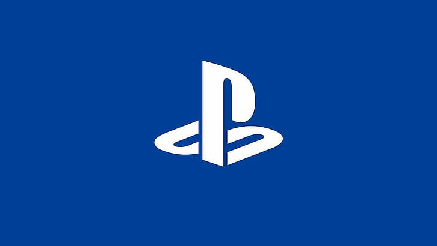

Xbox Series X
Xbox Series X is the supreme console gaming experience. It has up to 8k support, an 8-core 3.8 GHz CPU, up to a 1TB SSD,
and can run games at a staggering 120fps. The specs aren't the only thing that are powerful though, as this powerhouse has game titles
that have been a staple in gaming since the dawn of the Xbox console series. Popular franchises that can be found on Xbox include
the Halo series, Forza Motorsport and Forza Horizon, Gears of War, and Microsoft Flight Simulator just to name a few.
That isn't all the system has to offer though, as the Xbox console is rich with third-party game titles to play on top of the
already established first party titles. Which brings me to another benefit of this system, Microsoft provides you with Xbox Game Pass;
a service that gives you access to a massive rotating catalog of games from a variety of publishers, as well as Xbox Live Gold and EA Play
services included in your single subscription, that for the first month, you can start right now for only $1.

Playstation 5
The Playstation 5 outclasses the Xbox Series X in numerous aspects and for that reason, it is the premium way to play video games on console.
It also has 8k support, up to 1TB SSD, and despite the shortcomings on the CPU, it is still more than powerful enough to play any game you want
and give you that beautifully crisp 120fps. Although the power is still impressive on PS5, that isn't Sony's main focus for the console.
That is where the games come into play. The amount of amazing first party titles on this system are truly impressive. To name a few,
the Playstation console is home to well beloved series and games such as The Last Of Us, God of War, Horizon Zero Dawn, Uncharted, Bloodborne,
Infamous, Spider-Man, and so, so, so many more incredible gaming experiences. And Playstation also has the benefit of PS Plus, a service that
competes very well with Xbox's Game Pass. Playstation Plus gives you access to just as wide of a variety in its games library, and it has a
service known as Playstation Now, which allows you to stream games to your system and play games from any of the systems that came before the PS5.
this also allows you to stream to your phone, TV, desktop computer, or laptop to play games on the go, all included in a singular subscription.
